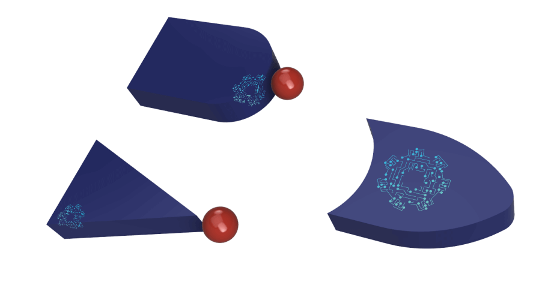
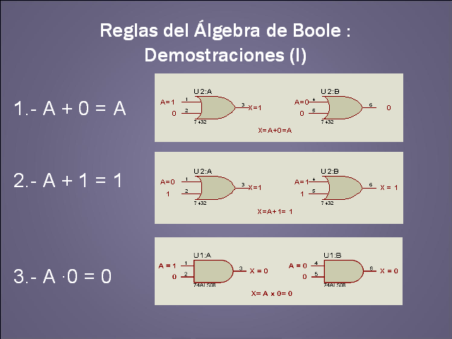
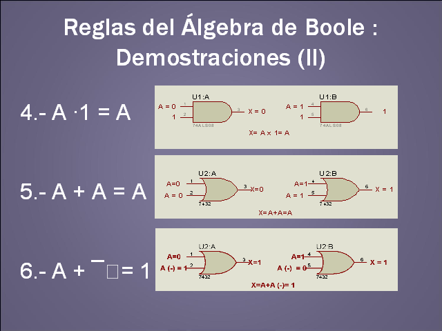
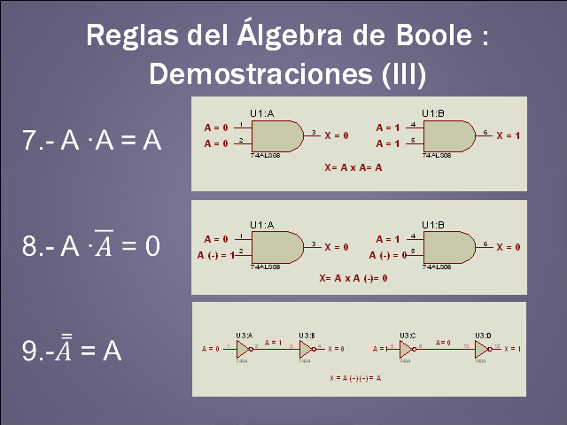
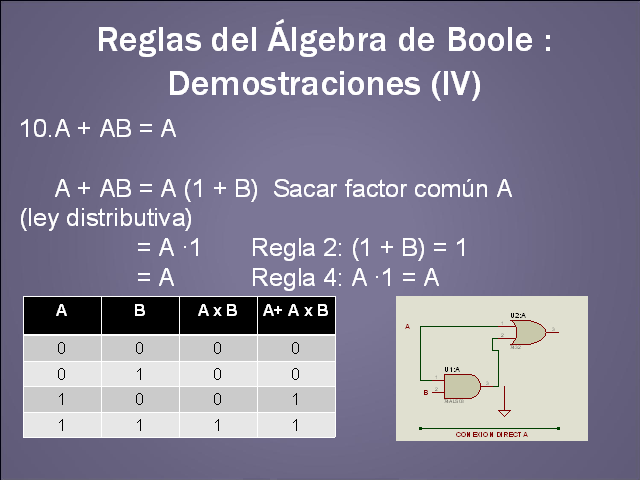
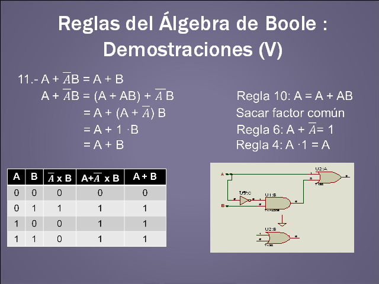
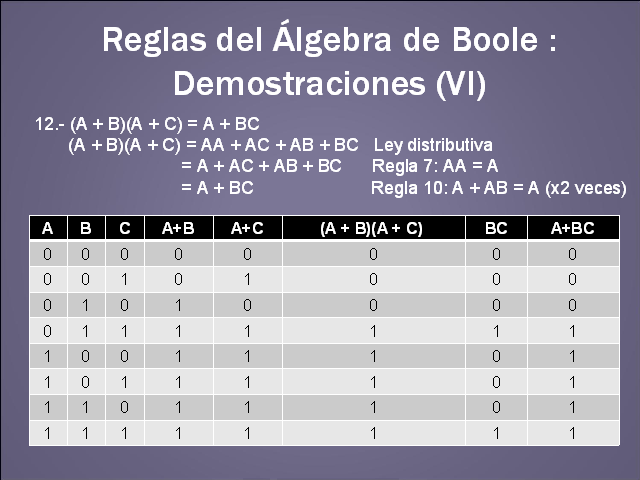

El álgebra de Boole es un método para simplificar los circuitos lógicos (o a veces llamados circuitos de conmutación lógica) en electrónica digital.
Por lo tanto, también se llama como "Cambio de álgebra". Podemos representar el funcionamiento de los circuitos lógicos utilizando números, siguiendo algunas reglas, que son bien conocidas como "Leyes del álgebra de Boole".
También podemos hacer los cálculos y las operaciones lógicas de los circuitos aún más rápido siguiendo algunos teoremas, que se conocen como "Teoremas del álgebra de Boole". Una función booleana es una función que representa la relación entre la entrada y la salida de un circuito lógico.
La lógica booleana solo permite dos estados del circuito, como True y False. Estos dos estados están representados por 1 y 0, donde 1 representa el estado "Verdadero" y 0 representa el estado "Falso".
Lo más importante para recordar en el álgebra de Boole es que es muy diferente al álgebra matemática regular y sus métodos.
Historia del álgebra de boole
Como se mencionó anteriormente, el álgebra de Boole se inventó en el año de 1854, por el matemático inglés George Boole. Primero declaró la idea del álgebra de Boole en su libro "Una investigación de las leyes del pensamiento"
Después de esto, el álgebra de Boole es bien conocida como la forma perfecta para representar los circuitos lógicos digitales.
A fines del siglo XIX, los científicos Jevons, Schroder y Huntington utilizaron este concepto para términos modernizados. Y en el año de 1936, MHStone demostró que el álgebra de Boole es 'isomorfo' para los conjuntos (un área funcional en matemáticas).
En la década de 1930, un científico llamado Claude Shannon desarrolló un nuevo método de álgebra tipo "Cambio de álgebra" utilizando los conceptos de álgebra de Boole, para estudiar los circuitos de conmutación.

La síntesis lógica de las herramientas modernas de automatización electrónica se representa de manera eficiente mediante el uso de funciones booleanas conocidas como "Diagramas de decisión binarios".El álgebra de Boole permite solo dos estados en un circuito lógico, como True y False, High and Low, Yes y No, Open and Close o 0 y 1.
Reglas basicas del álgebra de boole: demostracion I

Reglas basicas del álgebra de boole: demostracion II

Reglas basicas del álgebra de boole: demostracion III

Reglas basicas del álgebra de boole: demostracion IV

Reglas basicas del álgebra de boole: demostracion V

Reglas basicas del álgebra de boole: demostracion VI

A continuación se adjunta un videos de las reglas basicas del algebra de boole para facilitar la comprensión de las mismas: